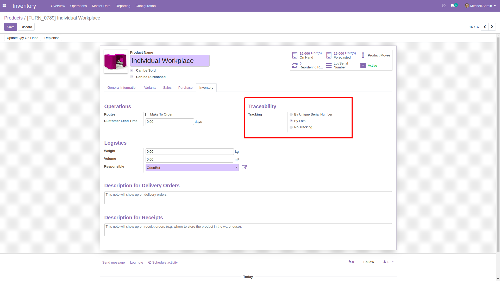
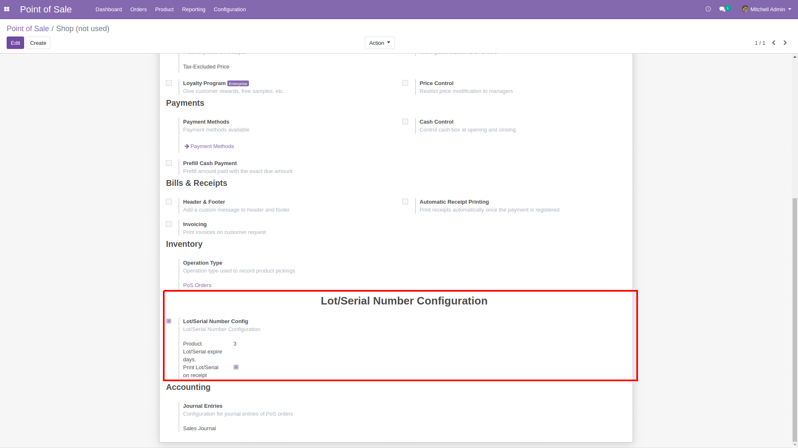
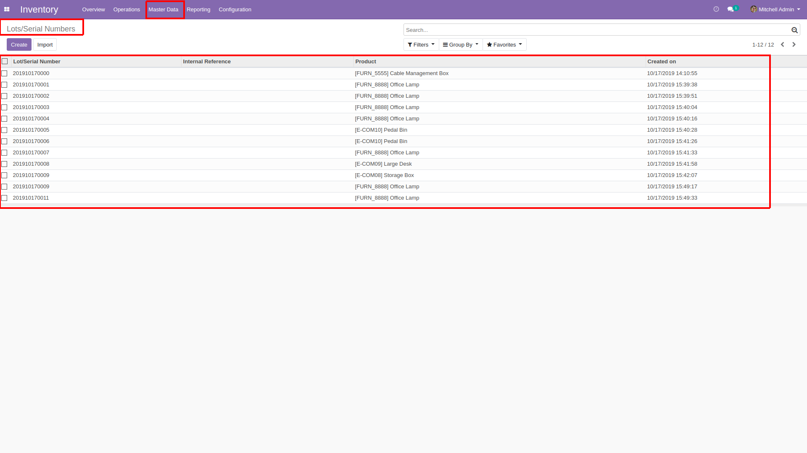
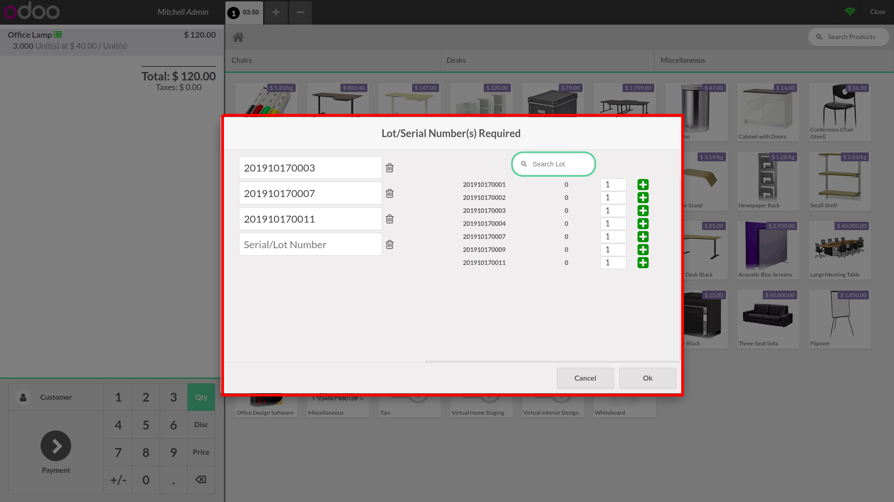
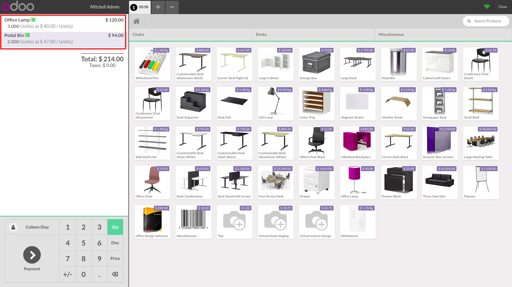
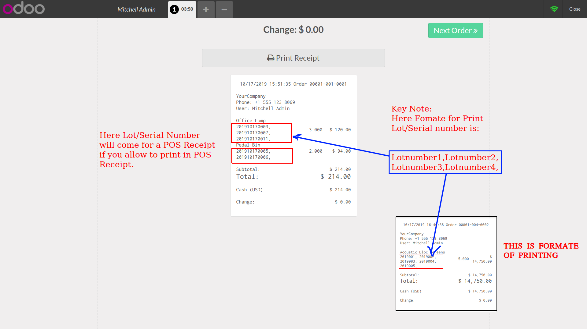

POS Lot/Serial Numbers(Community & Enterprise)
- For use this module first enable Lots and Serial numbers from Inventory -> Configuration -> Lots Serial Numbers.
Check Product Tracking by lot or Serial number for Proudct.

Check configuration of Lot/Serial Numbers.

Check list of added Lots/Serial Numbers list.

Here in POS interface you can add Lot/Serial number for product as per the POP option and you can search Product with lot and Serail number too. Here you can add multiple lots for Product and based on that you can add in to POS Interface.

In POS Cart added Product with view Quanity.

Lot and Serial number Print view in POS Receipt and based on that you can see Output of Print Receipt with Description.
